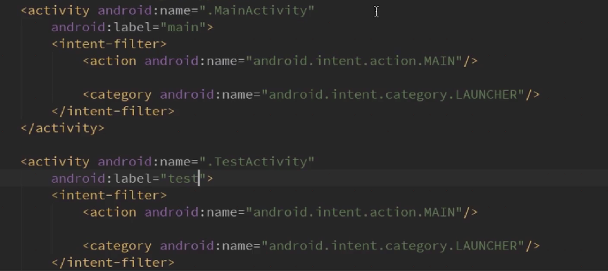

创建
step1 创建类继承自AppCompactActivity（Tv中使用继承自Activity）
step2 在manifest中注册
可以直接在类中利用快捷键进行注册
也可以在manifest文件中注册
tips activity内部有intent-filter代表主入口,可以让多个activity都有主入口的intent-filter,系统中会有两个入口指向同一个app

AppCompatActivity和Activity的区别
AppCompatActivity相对于Activity的主要的两点变化； 1：主界面带有toolbar的标题栏； 2：theme主题只能用android:theme=”@style/AppTheme （appTheme主题或者其子类），而不能用android:style。 否则会提示错误： Caused by: java.lang.IllegalStateException: You need to use a Theme.AppCompat theme (or descendant) with this activity.
https://blog.csdn.net/today_work/article/details/79300181
四种启动模式
设置启动模式:
method1 在manifest中设置launchMode属性
method2 代码设置
- CLEAR_TASK代表清除栈
- CLEAR_TOP代表清除栈顶
- NEW_TASK代表创建新栈
标准启动模式(standard)(默认)
每次激活Activity时都会创建Activity，并放入任务栈中。
如果启动此Activity的Intent中没有设置FLAG_ACTIVITY_NEW_TASK标志, 则这个Activity与启动他的Activity在同一个Task中。"launchMode"设置为"standard"的Activity可以被实例化多次, 可以在Task中的任何位置, 对于一个新的Intent请求就会实例化一次.
使用场景：Standard 模式是系统默认的启动模式，一般我们 app 中大部分页面都是由该模式的页面构成的，比较常见的场景是：社交应用中，点击查看用户A信息->查看用户A粉丝->在粉丝中挑选查看用户B信息->查看用户A粉丝... 这种情况下一般我们需要保留用户操作 Activity 栈的页面所有执行顺序。
顶部复用模式(singleTop)
如果在任务的栈顶正好存在该Activity的实例， 就重用该实例，而不会创建新的Activity对象，不过它会调用onNewIntent()方法。如果栈顶部不存在就会创建新的实例并放入栈顶(即使栈中已经存在该Activity实例，只要不在栈顶，都会创建实例)。
如果启动此Activity的Intent中没有设置FLAG_ACTIVITY_NEW_TASK标志, 则这个Activity与启动他的Activity在同一个Task中。"launchMode"设置为"singleTop"的Activity可以被实例化多次, 可以在Task中的任何位置, 对于一个新的Intent请求如果在Task栈顶, 则会用栈顶的Activity响应Intent请求,而不会重新实例化对象接收请求, 如果没有在栈顶, 则会实例化一个新的对象接收Intent请求.
使用场景：防止用户多次点击导致同一个activity在顶部多次重复；SingleTop 模式一般常见于社交应用中的通知栏行为功能，例如：App 用户收到几条好友请求的推送消息，需要用户点击推送通知进入到请求者个人信息页，将信息页设置为 SingleTop 模式就可以增强复用性。
单一任务模式(singleTask)

如果在栈中已经有该Activity的实例，就重用该实例(会调用实例的onNewIntent())。重用时，会让该实例回到栈顶，因此在它上面的实例将会被移除栈。如果栈中不存在该实例，将会创建新的实例放入栈中。
和singleTop在名字上即可看出区别，即singleTop每次只检测当前栈顶的Activity是否是我们需要请求创建的，而singleTask则会检测栈中全部的Activity对象，从上向下，如果检测到是我们所请求的则会消灭此Activity对象上面的对象，直接把检测到的我们需要的Activity置为栈顶。
"launchMode"设置为"singleTask"的Activity总是在栈底, 只能被实例化一次, 它允许其它Activity压入"singleTask"的Activity所在的Task栈,如果有新的Intent请求有此标志的Activity, 则系统会清除有此标志的Task栈中的全部Activity,并把此Activity显示出来。
使用场景：SingleTask 模式一般用作应用的首页，例如浏览器主页，用户可能从多个应用启动浏览器，但主界面仅仅启动一次，其余情况都会走onNewIntent，并且会清空主界面上面的其他页面。
单例模式(singleInstance )
在一个新栈中创建该Activity实例，并让多个应用共享该Activity实例。一旦这种模式的Activity实例存在于某个栈中，任何应用再激活这个Activity时都会重用该栈中的实例，其效果相当于多个应用程序共享一个应用，不管谁激活该Activity都会进入同一个应用中。此启动模式和我们使用的浏览器工作原理类似，在多个程序中访问浏览器时，如果当前浏览器没有打开，则打开浏览器，否则会在当前打开的浏览器中访问。此模式会节省大量的系统资源，因为他能保证要请求的Activity对象在当前的栈中只存在一个。
"launchMode"设置为"singleInstance"的Activity总是在栈底, 只能被实例化一次, 不允许其它的Activity压入"singleInstance"的Activity所在Task栈, 即整个Task栈中只能有这么一个Activity.
使用场景：SingleInstance 模式常应用于独立栈操作的应用，如闹钟的提醒页面，当你在A应用中看视频时，闹钟响了，你点击闹钟提醒通知后进入提醒详情页面，然后点击返回就再次回到A的视频页面，这样就不会过多干扰到用户先前的操作了。
生命周期

流程案例
- 正常启动:onCreate -> onStart -> onResume；正常退出:onPause -> onStop -> onDestory
- 已经处于前台的Activity,点击主页按钮离开当前Activity:onPause -> onStop；回到Activity:onRestart -> onStart -> onResume
- Activity不可操作(如:息屏、打开了其他Activity,而应用被强行杀死了),再回到Activity:onCreate -> onStart -> onResume
- 当启动另一个Activity时,当前Activity:onPause -> onStop,当点击返回按钮使另一个Activity退出时,当前Activity:onRestart -> onStart -> onResume，当前Activity回调onPause后便会开始SecondActivity的启动操作
- 普通对话框对生命周期没有任何影响
- 如果有个Activity伪装成对话框模式,那么它启动时,之前的Activity:onPause,"对话框"消失后,onResume再次回到前台
注意事项:
不要在MainActivity的onPause()中做耗时操作,可以把处理放到onStop,否则会影响SecondActivity的启动速度
onAttachedToWindow()/onDetachedFromWindow()
适用于View附加到Window后/View从Window分离后
此时View还未经过测量和绘制
调用顺序 onResume -> onAttachedToWindow(还未经过测量和绘制) -> onWindowsFocuesChanged(hasFocus:true时已经经过测量和绘制) -> onDetachedFromWindow() -> onPause
一般使用场景是初始化/释放重量级资源
参考：https://www.cnblogs.com/liushilin/p/11099856.html
onNewIntent()
前提:ActivityA已经启动过,处于当前应用的Activity任务栈中;
当ActivityA的LaunchMode为Standard时：
- 由于每次启动ActivityA都是启动新的实例，和原来启动的没关系，所以不会调用原来ActivityA的onNewIntent方法
当ActivityA的LaunchMode为SingleTop时：
如果ActivityA在栈顶,且现在要再启动ActivityA，这时会调用onNewIntent()方法 ，生命周期顺序为：
onCreate—>onStart—>onResume—onPause—>onNewIntent—>onResume
当ActivityA的LaunchMode为SingleInstance,SingleTask：
如果ActivityA已经在任务栈中，再次启动ActivityA，那么此时会调用onNewIntent()方法，生命周期调用顺序为：
onPause—>跳转其它页面—>onCreate—>onStart—>onResume—onPause—>跳转A—>onNewIntent—>onRestart—>onStart—>onResume
总的来说，只对SingleTop(且位于栈顶)，SingleTask和SingleInstance(且已经在任务栈中存在实例)的情况下，再次启动它们时才会调用，即只对startActivity有效，对仅仅从后台切换到前台而不再次启动的情形，不会触发onNewIntent。
onActivityResult()（Deprecated）
- 待跳转的Activity启动模式错误： standard与singletop模式是会在跳转后的Activity finish后执行onActivityResult，而singletask和singleinstance模式是在startActivityforresult后立即执行onActivityResult；
- startActivityforresult（）的第二个参数requestCode必须>=0,而且<0xffff api文档里是这么说的：
@param requestCode If >= 0, this code will be returned in* onActivityResult() when the activity exits.
横竖屏切换
应用程序的界面从横向变为纵向或从纵向变为横向时，将会回调以下生命周期方法：
onPause(): 在活动完全不可见时调用，这是在切换屏幕方向时会发生的。在该方法内您可以暂停正在进行的操作，例如暂停视频播放。onSaveInstanceState(Bundle outState): 在活动被销毁之前调用，用于保存当前活动的状态信息，例如滚动位置、文本框中的文本等。onStop(): 在活动不可见时调用，用于释放资源或停止一些操作。onDestroy(): 在活动被销毁之前调用，用于释放资源或停止一些操作。onCreate(Bundle savedInstanceState): 当活动被重新创建时，例如在屏幕方向变化后，该方法会被调用。您可以使用savedInstanceState参数来恢复保存的状态信息。onStart(): 在活动变得可见时调用，您可以在此处开始一些操作或恢复之前暂停的操作。onResume(): 在活动准备好与用户进行交互时调用，例如在屏幕方向变化后。在此方法内您可以恢复之前暂停的操作。
Activity启动方式
显式启动
隐式启动
①启动系统Activity
②启动普通Activity
传递内容
使用Intent的putExtra传递
第一个Activity中
//创建意图对象
Intent intent = new Intent(this,TwoActivity.class);
//设置传递键值对
intent.putExtra("data",str);
//激活意图
startActivity(intent);
第二个Activity中
// 获取意图对象
Intent intent = getIntent();
//获取传递的值
String str = intent.getStringExtra("data");
//设置值
tv.setText(str);
使用Intent的Bundle传递
第一个Activity中
//创建意图对象
Intent intent = new Intent(MainActivity.this,TwoActivity.class);
//用数据捆传递数据
Bundle bundle = new Bundle();
bundle.putString("data", str);
//把数据捆设置改意图
intent.putExtra("bun", bundle);
//激活意图
startActivity(intent);
第二个Activity
//获取Bundle
Intent intent = getIntent();
Bundle bundle = intent.getBundleExtra("bun");
String str = bundle.getString("data");
tv.setText(str);
使用序列化对象Seriazable
工具类
import java.io.Serializable;
class DataBean implements Serializable {
private String name;
private String sex;
public String getName() {
return name;
}
public void setName(String name) {
this.name = name;
}
public String getSex() {
return sex;
}
public void setSex(String sex) {
this.sex = sex;
}
}
第一个Activity
//创建意图
Intent intent = new Intent(MainActivity.this,TwoActivity.class);
DataBean bean = new DataBean();
//通过set方法把数据保存到DataBean对象中
bean.setName("啦啦");
bean.setSex("男");
intent.putExtra("key", bean);
startActivity(intent);
第二个Activity
Intent intent = getIntent();
//反序列化数据对象
Serializable se = intent.getSerializableExtra("key");
if(se instanceof DataBean){
//获取到携带数据的DataBean对象db
DataBean db = (DataBean) se;
tv.setText(db.getName()+"==="+db.getSex());
}